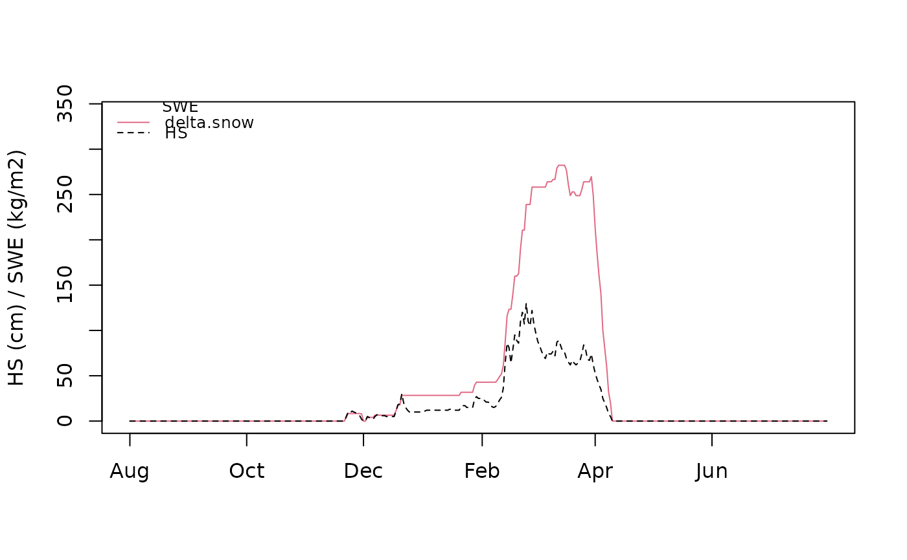

Daily snow depth data for a northern alpine station
hsdata.RdGapless daily snow depth observations for a winter season from 1.8. - 31.7. from a station situated in the northern earstern alps at an altitude of 600 m. For anonymization the years are intentionally set to 1900 - 1901.
This data series is free of gaps with a minimum of 0 and a maximum of 1.3 meters.
It is intended to be used as is as input data for the package nixmass
to calculate snow water equivalent and bulk snow density with the delta.snow method
and several empirical regression models from the literature.
Usage
data(hsdata)Format
A `data.frame` named data with columns date and hs.
- date
The date column contains character strings of the format "YYYY-MM-DD" and is of class
character
.
- hs
The hs column holds daily observed snow depths in meters and is of class
numeric.
Examples
## Load example data
data("hsdata")
## explore dataset
head(hsdata)
#> date hs
#> 1 1900-08-01 0
#> 2 1900-08-02 0
#> 3 1900-08-03 0
#> 4 1900-08-04 0
#> 5 1900-08-05 0
#> 6 1900-08-06 0
plot(hsdata$hs, type="o")
## compute snow water equivalents
o <- nixmass(hsdata, model="delta.snow")
plot(o)

o1 <- nixmass(hsdata, alt=600, region.jo09 = 6, region.gu19 = "central",
snowclass.st10 = "alpine", verbose = FALSE)
plot(o1)
summary(o1)
#> Min. 1st Qu. Median Mean 3rd Qu. Max.
#> 0.00000 0.00000 0.00000 38.58482 28.34948 282.25331